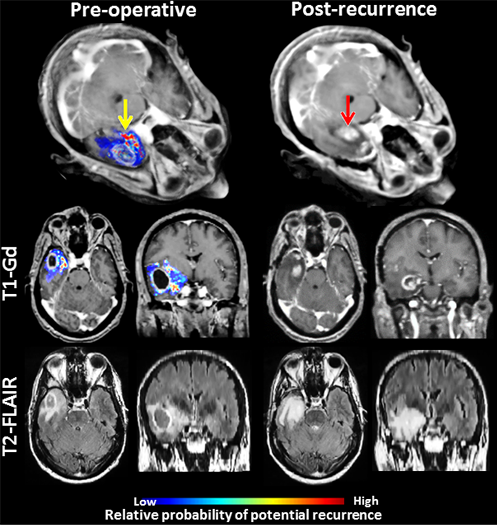

Left panel presents an estimated map for tumor infiltration from pre-operative MRI analysis; yellow arrow points to a regions estimated to be relatively more infiltrated. Right panel represents the corresponding MR images after tumor resection and subsequent recurrence (red arrow) for the same patient. Recurrence occurred in the vicinity of peritumoral tissue originally estimated to be highly infiltrated.
References:
-
H.Akbari, L.Macyszyn, X.Da, M.Bilello, R.L.Wolf, M.Martinez-Lage, G.Biros, M.Alonso-Basanta, D.M.O'Rourke, C.Davatzikos. "Imaging Surrogates of Infiltration Obtained Via Multiparametric Imaging Pattern Analysis Predict Subsequent Location of Recurrence of Glioblastoma", Neurosurgery. 78(4):572-80, 2016, DOI:10.1227/NEU.0000000000001202
-
H.Akbari, L.Macyszyn, X.Da, R.L.Wolf, M.Bilello, R.Verma, D.M.O'Rourke, C.Davatzikos, "Pattern analysis of dynamic susceptibility contrast-enhanced MR imaging demonstrates peritumoral tissue heterogeneity", Radiology. 273(2):502-10, 2014, DOI:10.1148/radiol.14132458
-
H.Akbari, L.Macyszyn, J.Pisapia, X.Da, M.Attiah, Y.Bi, S.Pal, R.Davuluri, L.Roccograndi, N.Dahmane, R.Wolf, M.Bilello, D.M.O'Rourke, C.Davatzikos, "Survival Prediction in Glioblastoma Patients Using Multi-parametric MRI Biomarkers and Machine Learning Methods", American Society of Neuroradiology, O-525:2042-2044, 2015.
 .
.